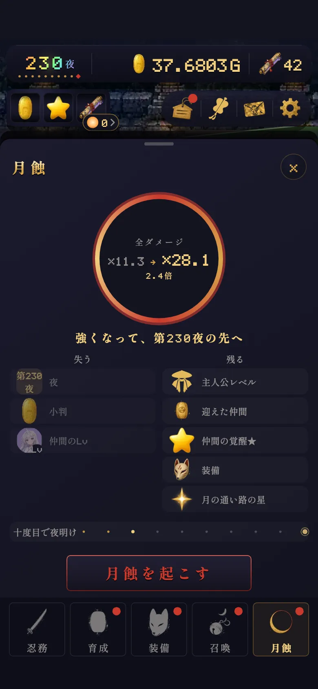

月蝕・暁 押しどきと倍率の式
最終更新:
先に答え
月蝕のしくみ

12345- 1全ダメージ ×今 → ×後 と、何倍になるか
- 2失うもの（夜・小判・なかまのLv）
- 3残るもの
- 4点＝月蝕の回数。10度目で暁
- 5月蝕を起こす
| 失う | 残る | 得る |
|---|---|---|
| 夜・小判・なかまのLv（鍛錬） | 主人公レベル・迎えたなかま・覚醒★・装備・絵巻・月の通い路の星 | 全ダメージの倍率（ずっと）。最深を更新した月蝕なら絵巻+3・灯+75 |
月蝕のあとは、なかまが妖1体に15秒以上かかる夜まで一気に駆け抜けます（最大で月蝕した夜の80%まで）。戻り道は思ったより短いです。
押せる夜
- 最初の月蝕は第100夜から。
- 2回目からは「前に月蝕した最深の夜より先の、大妖の夜」から押せます。
- 一度月蝕したあと、画面を開いたまま30分、今の巡りの最深が伸びないときは、前の最深の90%（10夜単位で切り捨て・最低でも第100夜）まで潜っていれば押せます（盆に「九割で起こせる」と出ます）。
- 今の巡りの最深が前の月蝕の最深を越えていない月蝕は、暁の回数に数えず、絵巻・灯のおまけもありません。
倍率の式
月蝕でもらえるのは「蝕片」。画面には出ませんが、全ダメージの倍率のもとです。
式
「最深夜」は今の巡りでいちばん深く進んだ夜（今いる夜ではない）。巻物の装備で蝕片が増えます。
蝕片はたまり続けるので、回数を重ねるほど1回の「◯倍」は小さく見えます。弱くなったわけではありません。
最深夜ごとの蝕片（巻物の補正前）（ひらく）
| 最深夜 | その夜で月蝕したときの蝕片 |
|---|---|
| 第100夜 | 14 |
| 第150夜 | 25.3 |
| 第200夜 | 46 |
| 第300夜 | 151 |
| 第400夜 | 496 |
| 第500夜 | 1.63K |
| 第700夜 | 17.6K |
| 第1000夜 | 626K |
| 第1500夜 | 240M |
| 第2000夜 | 92.0G |
| 第2500夜 | 35.2T |
| 第3000夜 | 13.5P |
押しどき
押しどき計算機
第1560夜で押すと —
見込み = 1 + (盆の倍率 − 1) × 1.055夜差 ÷ 4.5、夜差 = max(0, 押したい夜 − 今の巡りの最深夜)。途中で月蝕せず、巻物を替えない場合の見込みです。盆の数字は小数第1位で切り捨てなので、少しずれます。
考え方
- 倍率は深いほど伸びる。でも時間も使う。伸び（10夜で約×1.13）より進みの鈍りの方が大きくなったら押しどき。
- 詰まって30分動かないなら、九割の月蝕で立て直すのも手。
- 月蝕のあとは駆け抜けで戻れるので、深い月蝕を怖がらなくて大丈夫。
札と巻物
まだ越えたことのない大妖を討って次の夜へ進むと「札」が1枚増え、全ダメージが ×1.035 ずつ重なります。札は通算でいちばん深い夜から数えるので、月蝕では減らず、同じ大妖を討ち直しても増えません。
式
装備の巻物は「月蝕の力」。巻物の主効果 × 0.25 だけ蝕片が増えます（MR Lv1で +50%、MR Lv99で約 +69.8%）。
暁
月蝕を10回起こすたびに、自動で暁（夜明け）が来ます。選ぶものはありません。前の月蝕の最深を越えていない月蝕は数えません。
| 暁の恵み | 1回ごと | 上限 |
|---|---|---|
| 留守の上限 | +2時間 | 24時間（暁8回） |
| なかまLvの持ち越し | +5% | 75%（暁15回） |
| 蝕の間隔 | −3秒 | −30秒（暁10回） |
| 絵巻 | +5枚 | — |
| 今宵の絵巻（毎日） | 暁5回目から+1枚 | +1枚まで |
持ち越しがあると、月蝕のあともなかまのLvが一部残ります。最初の暁の前は0%なので、Lvはいったん戻ります。
月の通い路の宿が陰る
2回目からの月蝕では、陰っている宿が3つ未満なら、加護が灯っていて、まだ陰っておらず、位1・2の星が残る宿が1つ陰り、その星の効き目が止まります（最初の月蝕では陰りません）。位3の星は陰りません。宿の加護・四神・紫微垣の効き目は止まりません。陰った星は灯し直せて、灯し直すと星の位が上がります。